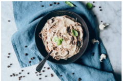

Sobre mi
Hola, bienvenid@ a mi blog, un espacio donde quiero compartir mis recetas vegetarianas y veganas favoritas...
Suscríbete a mi blog


Pasta con salsa de coliflor y pimienta de Jamaica
13 marzo, 2019
Una salsa vegana para la pasta, tan sabrosa y cremosa que resulta irresistible...

Galletas de avena, rosa y lima
12 febrero, 2019
Galletas para San Valentín? Estas galletas ricas y crujientes...

Mijo cremoso con lentejas, hortalizas y shiitake
1 febrero, 2019
Un buen plato de mijo cremoso con lentejas y hortalizas...

Calabacines rellenos de arroz negro y calabaza
18 diciembre, 2018
Estos calabacines rellenos de arroz negro y calabaza te van a encantar...